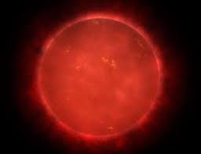
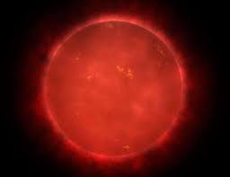
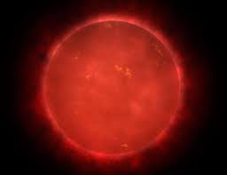

Самые известные небесные тела
Список объектов

Фобос
Фо́бос (др.-греч. φόβος «страх») — один из двух спутников Марса (наряду с Деймосом). Спутник был открыт американским астрономом Асафом Холлом в 1877 году и назван в честь древнегреческого бога Фобоса (переводится как «Страх»), сына бога войны Ареса.
Бетельгейзе
Бетельге́йзе(α Ориона, α Ori) — яркая звезда в созвездии Ориона. Красный сверхгигант, полуправильная переменная звезда, блеск которой изменяется от 0,0 до 1,3 звёздной величины
Вега
Ве́га (α Лиры, α Lyr) — самая яркая звезда в созвездии Лиры
Кошачий глаз
Туманность «Кошачий Глаз», или NGC 6543 — планетарная туманность в созвездии Дракона. Это одна из самых сложных по структуре туманностей. На снимках, сделанных с высоким разрешением телескопом Хаббла, видно множество сплетений, выбросов и ярких дугообразных элементов
Центавра Ал
Центавр A (NGC 5128) — линзовидная галактика (S0) с полярным кольцом, находящаяся в созвездии Центавр. Это одна из самых ярких и близких к нам соседних галактик, нас от неё разделяет 12 млн св. лет
Разработчик: Б9123-09.03.04 (4 подгруппа), Ткачев Андрей Владимирович